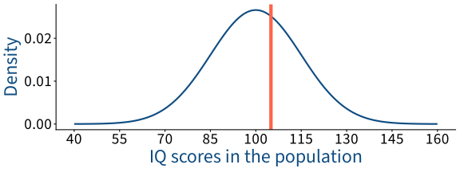
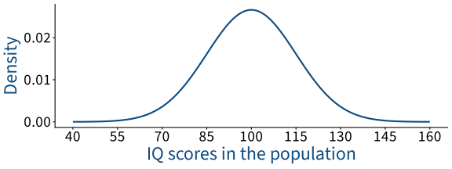
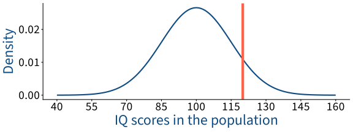
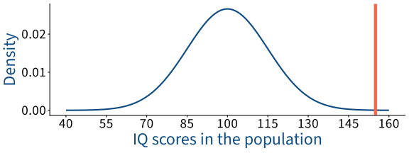
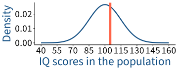
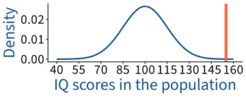
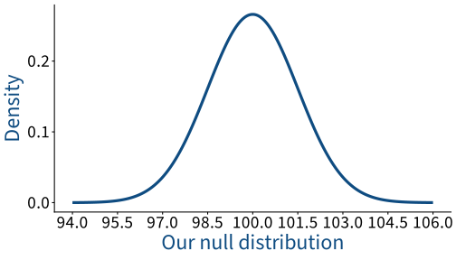
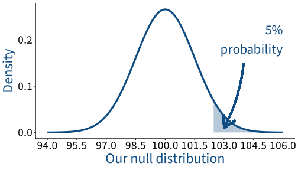
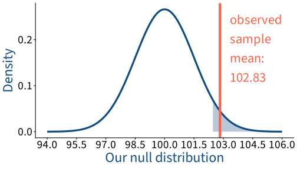
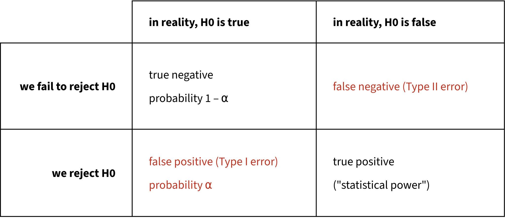

Null Hypothesis
Significance Testing
(NHST)
Data Analysis for Psychology in R 1 (2026/27)
Dr. Elizabeth Pankratz (elizabeth.pankratz@ed.ac.uk)
Psychology, PPLS
University of Edinburgh
Hi, I’m Elizabeth! :)
This week’s learning objectives
What is the basic logic behind Null Hypothesis Significance Testing (NHST)?
What are the five steps of doing NHST?
What kinds of errors is it possible to make when doing NHST?
Every test starts with a research question (RQ)
Our RQ: Do bilingual people have higher IQ
than the general population?
Standard IQ tests assume that in the general population,
- IQ scores are normally distributed,
- the mean IQ score is 100, and
- the standard deviation (SD) of IQ scores is 15.
So, the distribution of IQ scores in the population looks like this:

Imagine you observe something like this
You get data from one bilingual person, and their IQ is 105.
Imagine you’re drawing samples from the population distribution.
Vote by show of thumbs: How likely do you think it would be to sample IQ = 105 from this distribution?
= very likely
= very unlikely
Imagine you observe something like this
Now you get data from another bilingual person, and their IQ is 120.

Vote by show of thumbs: How likely do you think it would be to sample IQ = 120 from this distribution?
= very likely
= very unlikely
Imagine you observe something like this
Now you get data from a third bilingual person, and their IQ is 155.

Vote by show of thumbs: How likely do you think it would be to sample IQ = 155 from this distribution?
= very likely
= very unlikely
This is a super important intuition!!
If our observations from bilingual people are likely to come from the population distribution, then we might hypothesise that it’s likely for bilingual people to have the same IQ as the general population.

If our observations from bilingual people are unlikely to come from the population distribution, then we might hypothesise that it’s unlikely for bilingual people to have the same IQ as the general population.

These hypotheses are so important that statisticians have given them specific names.
- “Bilingual people have the same IQ as the general population” = our null hypothesis, written H0.
- “Bilingual people don’t have the same IQ as the general population” = our alternative hypothesis, written H1.
Null and alternative hypotheses
The null hypothesis (H0) is always that any difference or effect we’re interested in does not exist.
- For this RQ, our H0 is that bilingual people and the general population have no difference in IQ.
- In other words, the mean bilingual IQ \(\mu\) (mu) is equal to the population mean of 100.
- In fancy math notation:
\[ H_0 : \mu = 100 \]
- In plain text (like you might write in your R scripts):
H0: mu = 100The alternative hypothesis (H1) is that the difference or effect we’re interested in does exist.
- For our RQ, our H1 is that bilingual people have a greater IQ than the general population.
- In other words, the mean bilingual IQ \(\mu\) is greater than the population mean of 100.
- In fancy math notation:
\[ H_1 : \mu > 100 \]
- In plain text:
H1: mu > 100- If the RQ predicted lower IQ for bilingual people, then H1 would be \(H_1 : \mu < 100\).
- If the RQ predicted different IQ but didn’t say in which direction, then H1 would be \(H_1: \mu \neq 100\).
Null hypothesis ✅
“significance testing” ⁉️
Let’s set the scene first
In NHST, our goal is to find out how likely it is that we are in a world where the null hypothesis is true.
To do that, we must work out what samples like ours WOULD look like IF the null hypothesis were true.
So first: What does our sample actually look like?
For this test, the most useful information about our sample is its mean.
What sample means would be likely if the H0 were true?
We want to see what sample means would be likely if bilingual people have the same IQ as the population.
To do this, we can either:
do simulation, if we have access to the population:
- take the population distribution
- draw a bunch of samples of size 100 from it (the same size as our sample)
- get the mean of each of those samples
- make a distribution of those sample means
OR
do math (useful for the future when we don’t have access to the population!):
- use the formulae you’ve seen in previous weeks to precisely calculate the distribution of sample means we would expect to see if H0 were true
Why do we want to find the distribution of the sample means we would expect if H0 were true?
So that we can compare our observed sample mean to it and see how different our observation is from what we would get if H0 were true.
The null distribution
There is a name for the distribution that sample means would have if the null hypothesis were true. It is called the “null distribution”, and sometimes also called the “comparison distribution”.
For this kind of analysis, the null distribution has the following properties:
mean = the population mean = the mean in our H0 = 100
SD = the standard error of the mean = the standard deviation of the sampling distribution of means = \(\frac{\sigma}{\sqrt{n}}\)
We know the population SD \(\sigma\) is 15, and we know we have a sample size \(n\) of 100. So:
\[ \begin{align} \text{SD} &= \frac{15}{\sqrt{100}} \\[.5em] &= \frac{15}{10} \\[.5em] &= 1.5 \end{align} \]

Why is the null distribution useful?

Because it shows us how sample means would be distributed if the H0 were true.
And we can compare our observed sample mean to this distribution.
If our sample is unlikely enough to have come from the null distribution, then we say we are unlikely enough to be in a world where the H0 is true, and we can reject the H0.
So what’s “unlikely enough”?
What’s “unlikely enough”?
In Psychology, we usually want data like ours to have a less than 5% chance of coming from the null distribution.
What sample means have a less than 5% chance of coming from the null distribution?
For our one-tailed, directional H1:

For a two-tailed, non-directional H1:

This means that one time out of twenty, we’ll be rejecting the H0 when actually we shouldn’t.
One in twenty is the level of risk we’re willing to accept.
This is another idea that’s so important that it has a specific name:
A 5% probability of incorrectly rejecting H0 = our significance level or alpha level, also written \(\alpha\) = .05.
Let’s actually do the test
Compare our sample mean to the null distribution of sample means

Our sample mean is sufficiently unlikely, assuming the H0 is true!
We can tell because it’s in the most extreme 5% (where “extreme” is in the direction of our H1).
But how unlikely exactly?
How unlikely exactly is our sample mean?
To figure this out, we’ll do what’s called a z-test. In a z-test, we compare our sample mean’s z-score to the standard normal distribution using pnorm(). This test tells us the specific probability of seeing a sample mean like ours or one more extreme, assuming H0 is true.
The formula for a z-score in general:
\[ Z = \frac{x - M}{SD} \]
The formula when we’re getting the z-score of a sample mean:
\[ Z = \frac{\bar{x} - \mu}{\sigma / \sqrt{n}} \]
We know that \(\bar{x}\) = 102.83, \(\mu\) = 100, \(\sigma\) = 15, and \(n\) = 100, so:
\[ \begin{align} &= \frac{102.83 - 100}{15 / \sqrt{100}} \\[.5em] &= \frac{2.83}{1.5} \\[.5em] &= 1.89 \end{align} \]
Interpreting p-values
Our p-value is .029, which means there’s a 3% chance of observing data like ours or more extreme, assuming the H0 is true. How cool is it that we can figure this out!
This p-value is below \(\alpha\) = .05, so:
- the result is statistically significant, and
- we can reject H0.
- It does NOT mean that the H1 is proven true or that we can accept the H1!
- It also doesn’t mean that the difference is practically significant, necessarily (more on this in future weeks).
If the p-value were NOT below \(\alpha\) = .05, then
- the data would be insufficiently unlikely under the H0, meaning
- the result would not be statistically significant, and
- we would fail to reject H0.
- This would NOT mean that the H0 is proven true or that we can accept the H0!
Reporting this test in APA notation
With fancy formatting:
Let \(\mu\) denote the mean IQ score of bilingual people in the UK. At the 5% significance level, we performed a one-sample z-test of \(H_0 : \mu\) = 100 against \(H_1 : \mu\) > 100.
The sample mean IQ score of bilingual people (\(M\) = 102.83, \(SD\) = 18.67) was significantly higher than the national average (\(z\) = 1.89, \(p\) = .029, one-sided).
In plain text, like you might write in your R script:
Let mu denote the mean IQ score of bilingual people in the UK. At the 5% significance level, we performed a one-sample z-test of H0: mu = 100 against H1: mu > 100.
The sample mean IQ score of bilingual people (M = 102.83, SD = 18.67) was significantly higher than the national average (z = 1.89, p = .029, one-sided).Summary: The five steps of NHST
- Based on your RQ, define the null and alternative hypotheses.
- Collect sample data and determine the appropriate comparison distribution / null distribution.
- Calculate the test statistic for our observed sample (in our case, this was the z-score).
- Make a decision about whether or not to reject H0 (based on \(\alpha\) and \(p\)).
- Interpret this decision in the context of the RQ.
Are we making the right decision?
Are we making the right decision?
There are two possible states that the real world could be in:
- Our null hypothesis is true (e.g., bilingual people have the same IQ as everyone else).
- Our null hypothesis is false (e.g., bilingual people don’t have the same IQ as everyone else).
Ideally, our decision about H0 would match this perfectly. But remember that there’s some risk involved in our statistical testing: 5% of the time, we will incorrectly reject H0 when we should actually fail to reject it.

Is one “worse”? Depends on the scenario and your goals/judgements
Scenario: A court case
- False positive (Type I Error): An innocent person is considered guilty and punished
- False negative (Type II Error): A guilty person is considered innocent and goes free
Scenario: Testing for COVID
- False positive (Type I Error): You tell a healthy person they have COVID, so they isolate unnecessarily
- False negative (Type II Error): You tell a sick person they are healthy, which will result in them infecting others
What questions do you have right now?
Back matter
Revisiting this week’s learning objectives
What is the basic logic behind Null Hypothesis Significance Testing (NHST)?
- We imagine we’re in a world where the effect we’re interested in does not exist.
- We use our observed data to figure out how likely it is that we’re actually in that world.
- If we decide that we’re sufficiently unlikely to be in that world, we reject the null hypothesis.
What are the five steps of doing NHST?
- Based on your RQ, define the null and alternative hypotheses.
- Collect sample data and determine the appropriate comparison distribution / null distribution.
- Calculate the test statistic for our observed sample (in our case, this was the z-score).
- Make a decision about whether or not to reject H0.
- Interpret this decision in the context of the RQ.
Revisiting this week’s learning objectives
What kinds of errors is it possible to make when doing NHST?
- Your decision is either to reject the null or fail to reject the null, and you can either do this correctly or incorrectly.
- If you incorrectly reject the null (i.e., you reject H0 when you actually shouldn’t), this is a false positive, and we call it a Type I error.
- When alpha = .05, you can expect to make a Type I error about 5% of the time.
- If you incorrectly fail to reject the null (i.e., you fail to reject H0 when you actually should), this is a false negative, and we call it a Type II error.
- Bonus: Type II error rate ties into a concept called “statistical power”, which is the probability of correctly rejecting H0. More on power in your future statistical training!
Type I error and Type II error
I think these are possibly the least useful names for any statistical concept that I know of.
Here’s how I remember which is which: using the story of the boy who cried wolf.
Part 1 of the story:
- Boy cries “Wolf!” and everyone reacts
- There is no wolf (and everyone is annoyed with the boy)
Type I error:
- We reject the H0
- There is no effect, no reason to reject H0
Part 2 of the story:
- Boy cries “Wolf!” but now nobody reacts
- But this time there is a wolf oh no!
Type II error:
- We fail to reject the H0
- There is an effect, a reason to reject H0